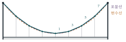

STEP I 1991, 문제 10
계속 읽기 전에 문제를 먼저 읽어 보자. 문제는 STEP Support Programme의 문제 데이터베이스에 있다: step.maths.org/questions/91-s1-q10
도입
사슬의 양 끝을 잡고 늘어뜨리면 사슬은 현수선(catenary)이라는 곡선을 이룬다(이 이름은 사슬을 뜻하는 라틴어에서 왔다). 갈릴레이(Galileo)는 이 곡선이 포물선(parabola)이라고 생각했지만, 1646년에 십 대의 하위헌스(Huygens)가 보였듯이 그렇지 않다. 그러나 현수교(suspension bridge)처럼 무거운 도로를 같은 간격의 지지대로 사슬에 매달면, 사슬은 정말로 포물선을 이룬다. 차이는 무게가 분포하는 방식에 있다. 현수선에서는 무게가 굽은 사슬 자체를 따라 고르게 분포하고, 다리에서는 수평 방향으로 고르게 분포한다.
이 문제는 각 이음점에서 힘을 분해하는 것만으로 포물선임을 증명한다. 핵심은 장력(tension)의 수평 성분(component)이 사슬 전체에서 같다는 것이고, 따라서 각 구간의 기울기는 그 구간이 지탱하는 무게에 비례한다. 그 결과 아름다운 규칙이 나타난다. 연속한 이음점 사이의 낙차는 홀수 \(1, 3, 5, 7, \ldots\)의 순서로 커지고, 이 홀수들의 부분합(partial sum)은 완전제곱수이다.
시작하기 전에
각 이음점 \(A_i\)에는 세 힘이 작용한다. 이웃한 두 구간의 장력, 그리고 지지대에 매달린 무게 \(w\)이다. 무게가 영향을 줄 수 없는 장력의 성분은 무엇인가?
무게는 연직 방향이므로, 각 이음점에서 두 장력의 수평 성분은 서로 평형을 이루어야 한다. 따라서 장력의 수평 성분을 \(H\)라 하면, \(H\)는 사슬의 모든 구간에서 같다.
차근차근 풀기
단계 1 각 이음점에서의 방정식
구간 \(A_{i-1}A_i\)가 (\(A_{i-1}\)에서 가운데 쪽으로 갈 때) 수평선 아래로 각 \(\phi_i\)를 이룬다고 하자. 그러면 이 구간의 장력 \(T_i\)의 수평 성분은 \(T_i\cos\phi_i\), 연직 성분은 \(T_i\sin\phi_i\)이다. \(1 \leq i \leq n\)에 대하여 \(A_i\)에서 힘을 분해하면 \[T_i\cos\phi_i = T_{i+1}\cos\phi_{i+1} = H, \qquad T_i\sin\phi_i - T_{i+1}\sin\phi_{i+1} = w.\] (바깥쪽 구간은 더 큰 연직 성분으로 위쪽과 바깥쪽으로 당기고, 안쪽 구간은 안쪽과 약간 아래쪽으로 당긴다. 그 차이가 지지대를 지탱한다.)
가운데 이음점 \(A_{n+1}\)에서는 어떻게 되는가? 다리의 대칭성(symmetry)을 이용하라.
대칭성에 의해 \(A_{n+1}\)에서 만나는 두 구간은 서로 거울상이므로, 각 구간이 지지대 무게의 절반을 지탱한다: \(T_{n+1}\sin\phi_{n+1} = \frac12w\).
단계 2 무게에서 기울기로
가운데에서 바깥쪽으로 가면서 연직 성분을 구하면 \[T_{n+1}\sin\phi_{n+1} = \tfrac12w, \quad T_n\sin\phi_n = \tfrac32w, \quad\ldots,\quad T_1\sin\phi_1 = \tfrac{2n+1}{2}w.\] 이다. 각각을 \(H\)로 나누면 기울기는 \(\tan\phi_i = \frac{(2(n + 1 - i) + 1)w}{2H}\)이다. 구간 \(A_{i-1}A_i\)의 기울기는 \(\frac{y_{i-1} - y_i}{h}\)이기도 하므로 \[\frac{y_n - y_{n+1}}{h} = \frac{w}{2H}, \qquad \frac{y_{n-1} - y_n}{h} = \frac{3w}{2H}, \qquad\ldots,\qquad \frac{y_0 - y_1}{h} = \frac{(2n + 1)w}{2H}.\] 역수를 취하고 홀수를 곱하면, \(\frac{h}{y_n - y_{n+1}}\), \(\frac{3h}{y_{n-1} - y_n}\), …, \(\frac{(2n + 1)h}{y_0 - y_1}\)는 모두 \(\frac{2H}{w}\)와 같다.■
단계 3 포물선
가운데에서 바깥쪽으로 이음점을 세는 번호를 \(j\)라 하여, \(A_{n+1-j}\)가 \(A_{n+1}\)로부터 수평 거리 \(jh\)인 곳에 있도록 하자. 이 점은 \(A_{n+1}\)보다 얼마나 높은가?
\(c = \frac{wh}{2H}\)로 두고 낙차를 더하면 \[y_{n+1-j} - y_{n+1} = c\bigl(1 + 3 + 5 + \cdots + (2j - 1)\bigr) = cj^2.\] 이다. 가운데에서부터 잰 \(x\)에 대하여 \(x = jh\)이므로, 가장 낮은 이음점으로부터의 높이는 \(\frac{c}{h^2}x^2 = \frac{w}{2Hh}x^2\)이다. 대칭성에 의해 반대쪽에서도 같은 식이 성립하고, 지지점(\(j = n + 1\))도 같은 식을 만족한다. 따라서 모든 점은 포물선 \[y = y_{n+1} + \frac{w}{2Hh}(x - x_{n+1})^2. \qed\] 위에 있다.

돌아보기
일정한 것을 찾아라. 연직 하중만 있으면 수평 장력은 어디서나 같다.
가운데에서부터 누적하라. 각 구간은 자신과 가운데 사이의 모든 무게를 지탱하므로, 연직 성분은 \(w\)씩 커진다.
홀수의 합은 제곱수이다. \(1 + 3 + \cdots + (2j - 1) = j^2\)이라는 사실이 기울기의 목록을 포물선으로 바꾸었다.
숨은 수학
포물선인가, 현수선인가?
이 논증의 연속 버전이 두 곡선을 모두 설명한다. 일정한 수평 장력 \(H\)를 받는 사슬 \(y(x)\)에서 장력의 연직 성분은 \(Hy'\)이고, 짧은 구간에서 이 값은 그 구간이 받는 하중만큼 변한다: \(H\,\mathrm{d}y' = \mathrm{d}W\).
하중이 수평 방향으로 고르게 분포하면(도로의 단위 길이당 무게가 \(\rho\)인 무거운 도로), \(Hy'' = \rho\)이므로 \(y\)는 이차식, 곧 포물선이다.
하중이 사슬 자신의 무게로서 사슬을 따라 고르게 분포하면(사슬의 단위 길이당 \(\rho\)), \(Hy'' = \rho\sqrt{1 + y'^2}\)이고, 그 해는 \(c = H/\rho\)인 현수선 \(y = c\cosh\frac xc\)이다.
사슬이 거의 수평인 바닥 근처에서는 두 곡선이 거의 같다. 둘은 지지점 근처에서 달라지는데, 그곳에서는 사슬이 가팔라서 같은 수평 거리 안에 더 많은 사슬이 들어가기 때문이다. 상판이 케이블보다 훨씬 무거운 실제 현수교는 포물선에 매우 가깝다.
거꾸로 된 사슬과 아치
사슬은 순수한 인장 상태에 있다. 그 모양을 위아래로 뒤집으면 순수한 압축(compression) 상태의 아치(arch)가 되며, 이 아치는 휘려는 경향이 전혀 없다. 로버트 훅(Robert Hooke)은 1675년에 이 사실을 애너그램으로 발표했는데, 이를 풀면 다음과 같다: “유연한 줄이 매달린 그대로, 다만 뒤집으면 단단한 아치가 서리라.” 크리스토퍼 렌(Christopher Wren)과 훅은 이 아이디어를 세인트폴 대성당(St Paul’s Cathedral)의 돔에 이용했고, 안토니 가우디(Antoni Gaudí)는 천장에 추를 단 줄들을 매달고 그것을 거꾸로 사진 찍는 방법으로 바르셀로나의 사그라다 파밀리아(Sagrada Família)를 설계했다. 세인트루이스의 게이트웨이 아치(Gateway Arch)는 (무게가 가해진) 뒤집힌 현수선이다.
1690년 야코프 베르누이(Jakob Bernoulli)는 매달린 사슬의 모양을 구하라는 문제를 수학자들에게 냈다. 1년도 안 되어 그의 동생 요한(Johann), 라이프니츠(Leibniz), 그리고 하위헌스가 풀이를 발표했다. 요한 베르누이는 훗날, 문제를 낸 형이 정작 그 문제를 풀지 못했다고 고소해하며 회상했다. 현수선은 새로운 미적분학(calculus)이 거둔 첫 승리 가운데 하나였으며, 쌍곡선함수(hyperbolic functions) \(\cosh\)와 \(\sinh\)로 이어졌다. 이 함수들은 18세기에 Vincenzo Riccati와 람베르트(Johann Heinrich Lambert)가 체계적으로 연구했다.
사고 기술
이음점과 곧은 부재로 이루어진 구조물에서는 각 이음점에서 힘의 평형을 따져라. 일정한 성분과 누적되는 하중이 모양을 드러내 주는 경우가 많다.
대학에서는 이것이 공학의 트러스(truss)와 골조 해석이 되고, 연속 극한에서는 케이블, 보, 막의 미분방정식(differential equation)이 된다. 이산적인 사슬에서 연속적인 사슬로 넘어가는 것은 10.3 절에서 본, 합에서 적분으로 넘어가는 것과 같은 방법이다.
더 도전하기
짝수 개의 지지대. 지지대가 \(2n\)개여서 사슬의 가장 낮은 부분이 가운데의 수평 구간이 되는 경우에 대해 문제를 다시 풀어라. 이음점들은 여전히 포물선 위에 있는가?
장력. 사슬에서 가장 큰 장력을 \(H\), \(w\), \(n\)으로 나타내어라. 그 장력은 어디에서 생기는가?
현수선. \(y = c\cosh\frac xc\)가 \(y'' = \frac1c\sqrt{1 + y'^2}\)을 만족함을 확인하라. \(x = 0\)에서 \(x = X\)까지 현수선의 길이가 \(c\sinh\frac Xc\)임을 보여라.
갈릴레이의 오류. 길이가 \(2L\)인 사슬이 \(2d\)만큼 떨어진 두 지지점 사이에 매달려 있다. \(L\)이 \(d\)보다 조금만 클 때, 현수선의 처짐이 포물선의 처짐과 근사적으로 같음을 보여라. 갈릴레이의 실험에서 그 차이가 드러나지 않은 이유는 무엇인가?
더 읽을거리
E. H. Lockwood, A Book of Curves (Cambridge University Press). 현수선, 포물선, 그리고 그 친척 곡선들을 다룬다.
Jacques Heyman, The Stone Skeleton (Cambridge University Press). 훅의 사슬에서 시작하여, 석조 아치와 돔이 어떻게 서 있는지를 설명한다.
David Billington, The Tower and the Bridge (Princeton University Press). 다리의 예술과 공학을 다룬다.